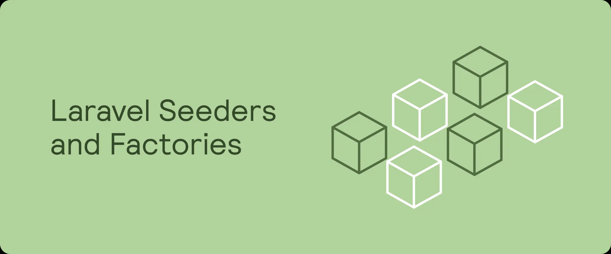
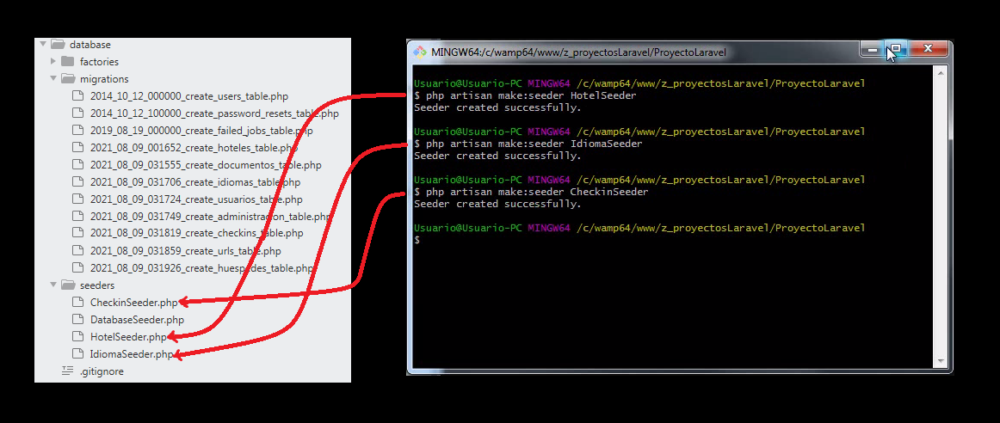
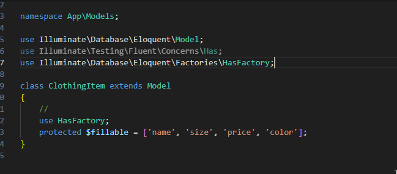
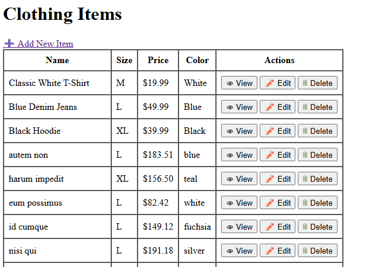

UD6.7 Database: Seeding
Documentation link

The goal of this section is to set up our project so that it starts with preloaded data — a process known as seeding — and to create factories for generating the models we need.
- We’ll begin by cloning our previous "CLOTHING STORE" project into the "sesion7 Seeding" folder.
- Just copy & paste to do so:

- Then you can serve the proyect from Sesion 7 folder:

Let´s have a quick read to the official documentation before we code to understand some concepts:
Resumen Table:
| Step | Command / Code Example | Description |
|---|---|---|
| 1. Create a Seeder | php artisan make:seeder UserSeeder |
Generates a seeder file in database/seeders/with a run()method. |
| 2. Insert Data (Query Builder) | php\nDB::table('users')->insert([ 'name' => 'John Doe', 'email' => 'john@example.com' ]);\n |
Inserts data manually into the database using the Query Builder. |
| 3. Insert Data (Eloquent Factory) | php\nUser::factory()->count(10)->create();\n |
Uses model factories and Faker to create realistic test data. |
| 4. Organize Multiple Seeders | php\npublic function run() {\n $this->call([\n UserSeeder::class,\n PostSeeder::class,\n CommentSeeder::class,\n ]);\n}\n |
Calls multiple seeders inside DatabaseSeederto keep data generation modular. |
| 5. Disable Model Events | php\nuse WithoutModelEvents;\n\nclass DatabaseSeeder extends Seeder {\n use WithoutModelEvents;\n}\n |
Prevents triggering observers, mutators, and events during seeding. |
| 6. Run All Seeders | php artisan db:seed |
Executes all seeders listed in DatabaseSeeder. |
| 7. Run Specific Seeder | php artisan db:seed --class=UserSeeder |
Executes only the specified seeder. |
| 8. Migrate Fresh with Seeding | php artisan migrate:fresh --seed |
Drops all tables, runs migrations, and seeds the database. |
| 9. Migrate Fresh with Specific Seeder | php artisan migrate:fresh --seed --seeder=UserSeeder |
Fresh migration and run only the specified seeder. |
| 10. Force in Production | php artisan db:seed --force |
Runs seeding without confirmation in production (⚠ dangerous). |
Introduction
Laravel includes the ability to seed your database with data using seed classes. All seed classes are stored in the database/seeders directory. By default, a DatabaseSeeder class is defined for you. From this class, you may use the call method to run other seed classes, allowing you to control the seeding order.
Mass assignment protection is automatically disabled during database seeding.


1 Writing Seeders
- To generate a seeder, execute the
make:seederArtisan command. - All seeders generated by the framework will be placed in the
database/seedersdirectory:
php artisan make:seeder UserSeeder

- A seeder class only contains one method by default:
run. - This method is called when the
db:seedArtisan command is executed. - Within the
runmethod, you may insert data into your database however you wish. - You may use the query builder to manually insert data or you may use Eloquent model factories.
As an example, let's modify the default DatabaseSeeder class and add a database insert statement to the run method:
Let´s comment by now the factory block it is by default


<?php
namespace Database\Seeders;
use Illuminate\Database\Seeder;
use Illuminate\Support\Facades\DB;
use Illuminate\Support\Facades\Hash;
use Illuminate\Support\Str;
class DatabaseSeeder extends Seeder
{
/**
* Run the database seeders.
*/
public function run(): void
{
//Using DB facade to insert data directly
// This is an alternative to using model factories
// and allows for quick seeding of the database without needing to define a factory.
// It is useful for simple seed data or when you want to quickly populate the database with
// some initial data without the overhead of creating a factory.
// seed the users table with 10 random users
for ($i = 0; $i < 10; $i++) {
DB::table('users')->insert([
'name' => Str::random(10),
'email' => Str::random(10).'@example.com',
'password' => Hash::make('password'),
]);
}
// seed the products table with 50 random products
for ($i = 0; $i < 10; $i++) {
DB::table('clothing_items')->insert([
'name' => Str::random(10),
'size' => Str::random(5), // Assuming size is a string
'price' => rand(10, 100),
'color' => Str::random(5), // Assuming color is a string
]);
}
}
}
You may type-hint any dependencies you need within the
runmethod's signature. They will automatically be resolved via the Laravel service container.
If we php artisan migrate:fresh --seed, then:


Muting Model Events (Optional)
While running seeds, you may want to prevent models from dispatching events.
Documentation link
<?php
namespace Database\Seeders;
use Illuminate\Database\Seeder;
use Illuminate\Database\Console\Seeds\WithoutModelEvents;
class DatabaseSeeder extends Seeder
{
use WithoutModelEvents;
/**
* Run the database seeders.
*/
public function run(): void
{
$this->call([
UserSeeder::class,
]);
}
}
Running Seeders
You may execute the db:seed Artisan command to seed your database. By default, the db:seed command runs the Database\Seeders\DatabaseSeeder class, which may in turn invoke other seed classes. However, you may use the --class option to specify a specific seeder class to run individually:
php artisan db:seed
php artisan db:seed --class=UserSeeder
You may also seed your database using the migrate:fresh command in combination with the --seed option, which will drop all tables and re-run all of your migrations. This command is useful for completely re-building your database. The --seeder option may be used to specify a specific seeder to run:
php artisan migrate:fresh --seed
php artisan migrate:fresh --seed --seeder=UserSeeder
Forcing Seeders to Run in Production (optional)
Some seeding operations may cause you to alter or lose data. In order to protect you from running seeding commands against your production database, you will be prompted for confirmation before the seeders are executed in the production environment. To force the seeders to run without a prompt, use the --force flag:
php artisan db:seed --force

2 Factories
When testing your application or seeding your database, you may need to insert a few records into your database. Instead of manually specifying the value of each column,
- Laravel allows you to define a set of default attributes for each of your Eloquent models using model factories.
- To see an example of how to write a factory, take a look at the
database/factories/UserFactory.phpfile in your application. - This factory is included with all new Laravel applications and contains the following factory definition:
namespace Database\Factories;
use Illuminate\Database\Eloquent\Factories\Factory;
use Illuminate\Support\Facades\Hash;
use Illuminate\Support\Str;
/**
* @extends \Illuminate\Database\Eloquent\Factories\Factory<\App\Models\User>
*/
class UserFactory extends Factory
{
/**
* The current password being used by the factory.
*/
protected static ?string $password;
/**
* Define the model's default state.
*
* @return array<string, mixed>
*/
public function definition(): array
{
return [
'name' => fake()->name(),
'email' => fake()->unique()->safeEmail(),
'email_verified_at' => now(),
'password' => static::$password ??= Hash::make('password'),
'remember_token' => Str::random(10),
];
}
/**
* Indicate that the model's email address should be unverified.
*/
public function unverified(): static
{
return $this->state(fn (array $attributes) => [
'email_verified_at' => null,
]);
}
}
As you can see, in their most basic form, factories are classes that extend Laravel's base factory class and define a definition method. The definition method returns the default set of attribute values that should be applied when creating a model using the factory.
Via the
fakehelper, factories have access to the Faker PHP library, which allows you to conveniently generate various kinds of random data for testing and seeding.
Faker Locale
You can change your application's Faker locale by updating thefaker_locale option in your config/app.php configuration file.
Using Model Factories
Of course, manually specifying the attributes for each model seed is cumbersome.

- Instead, you can use model factories to conveniently generate large amounts of database records. First, review the model factory documentation to learn how to define your factories.
For example, let's create admin + 10 users, personalize your admin user
public function run(): void
{
// Using model factories to create users, let´s create an admin user first
// This is useful for setting up an initial user with specific credentials
User::factory()->create([
'name' => 'admin',
'email' => 'admin@fcorios.com',
]);
// Using model factories to create 10 random users
// This is useful for populating the database with sample data for testing or development purposes
//You can find the User factory in database/factories/UserFactory.php
//Laravel User factory brings by default.
User::factory(10)->create();
//Using DB facade to insert data directly
// This is an alternative to using model factories
// and allows for quick seeding of the database without needing to define a factory.
// It is useful for simple seed data or when you want to quickly populate the database with
// some initial data without the overhead of creating a factory.
// seed the users table with 10 random users
/* v1: Just an example of how to seed users with random data through DB facade
for ($i = 0; $i < 10; $i++) {
DB::table('users')->insert([
'name' => Str::random(10),
'email' => Str::random(10).'@example.com',
'password' => Hash::make('password'),
]);
}
// seed the products table with 50 random products
for ($i = 0; $i < 10; $i++) {
DB::table('clothing_items')->insert([
'name' => Str::random(10),
'size' => Str::random(5), // Assuming size is a string
'price' => rand(10, 100),
'color' => Str::random(5), // Assuming color is a string
]);
}
*/
}
}
- After that we will have no clothing data yet
 - So we need a new Clothing Factory
- But first, what can you see different in names???
- So we need a new Clothing Factory
- But first, what can you see different in names???

- Yes, they look like real name :-)
3 Create a Factory and Seeder for Clothing
Let´s make a Clothing Factory and Seeder for clothing_items table and explain how to run it.
Got it — here’s a ready-to-use ClothingSeeder that uses the ClothingItemFactory to generate random clothes and also adds a few predefined items for variety.
3.1. Factory (database/factories/ClothingItemFactory.php)
The command to create the factory for your ClothingItem model is:
php artisan make:factory ClothingItemFactory --model=ClothingItem

<?php
namespace Database\Factories;
use Illuminate\Database\Eloquent\Factories\Factory;
use App\Models\ClothingItem;
class ClothingItemFactory extends Factory
{
protected $model = ClothingItem::class;
public function definition()
{
return [
'name' => $this->faker->words(2, true), // e.g. "Summer Jacket"
'size' => $this->faker->randomElement(['S', 'M', 'L', 'XL']),
'price' => $this->faker->randomFloat(2, 10, 200), // 10.00 to 200.00
'color' => $this->faker->safeColorName(), // e.g. "navy"
];
}
}
!!! IMPORTANT:
That error happens when ClothingItem::factory() isn’t available. Common causes:
A) Model is missing HasFactory
Add the trait to your model:
// app/Models/ClothingItem.php (Laravel 8+ default path)
namespace App\Models;
use Illuminate\Database\Eloquent\Model;
use Illuminate\Database\Eloquent\Factories\HasFactory;
class ClothingItem extends Model
{
use HasFactory;
// ...
}

3.2 Seeder (database/seeders/ClothingSeeder.php)
Command: php artisan make:seeder ClothingSeeder
<?php
namespace Database\Seeders;
use Illuminate\Database\Seeder;
use App\Models\ClothingItem;
class ClothingSeeder extends Seeder
{
public function run()
{
// Add some fixed clothing items
ClothingItem::insert([
[
'name' => 'Classic White T-Shirt',
'size' => 'M',
'price' => 19.99,
'color' => 'White',
'created_at' => now(),
'updated_at' => now(),
],
[
'name' => 'Blue Denim Jeans',
'size' => 'L',
'price' => 49.99,
'color' => 'Blue',
'created_at' => now(),
'updated_at' => now(),
],
[
'name' => 'Black Hoodie',
'size' => 'XL',
'price' => 39.99,
'color' => 'Black',
'created_at' => now(),
'updated_at' => now(),
],
]);
// Generate 20 random clothing items using the factory
ClothingItem::factory()->count(20)->create();
}
}
3.3. Register Seeder in DatabaseSeeder.php
public function run()
{
$this->call([
ClothingSeeder::class,
]);
}
Calling Additional Seeders
Within the DatabaseSeeder class, you may use the call method to execute additional seed classes.
- Using the
callmethod allows you to break up your database seeding into multiple files so that no single seeder class becomes too large. - The
callmethod accepts an array of seeder classes that should be executed:
/**
* Run the database seeders.
*/
public function run(): void
{
$this->call([
UserSeeder::class,
ClothingSeeder::class
]);
}
3.4. Run Everything
php artisan migrate:fresh --seed
This will:
- Drop all tables
- Re-run migrations
- Seed with your predefined and random clothing items

References
- Semillas en Laravel (Codea)
Activity
30 min Activity